Armi, strumenti e munizioni
Armi, strumenti e munizioni in Valheim – 200 oggetti con bioma, provenienza, strumento necessario, ricetta e utilizzo.
Nessun oggetto trovato.
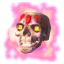
Anima-defuntiSacrifica un po' di sangue per animare i defunti. Potenzia il teschio per generare una moltitudine di scheletri e aumenta la tua magia del sangue per renderli più forti.
Come ottenerlo
- Fabbricare: Tavolo galdr da 10 ×
 Frammenti di ossa, 16 ×
Frammenti di ossa, 16 ×  Eitr raffinato, 4 ×
Eitr raffinato, 4 ×  Trofeo scheletrico · per miglioramento: 5 × Frammenti di ossa, 8 × Eitr raffinato, 2 × Trofeo scheletrico
Trofeo scheletrico · per miglioramento: 5 × Frammenti di ossa, 8 × Eitr raffinato, 2 × Trofeo scheletrico
 Arbalesta
Arbalesta
Un'arma lenta ma potente.
Come ottenerlo
 Arco del cacciatore
Arco del cacciatore
Finemente teso e lavorato, la gioia di un cacciatore.
Come ottenerlo
- Fabbricare: Forgia da 10 ×
 Legna pregiata, 20 ×
Legna pregiata, 20 ×  Ferro, 10 ×
Ferro, 10 ×  Piume, 2 ×
Piume, 2 ×  Pelle di cervo · per miglioramento: 5 × Legna pregiata, 10 × Ferro, 5 × Piume, 2 × Pelle di cervo
Pelle di cervo · per miglioramento: 5 × Legna pregiata, 10 × Ferro, 5 × Piume, 2 × Pelle di cervo
 Arco del nord
Arco del nord
Questo arco colpirà il bersaglio con precisione impeccabile.
Come ottenerlo
- Fabbricare: Forgia nera (livello 4) da 20 ×
 Orosangue, 1 ×
Orosangue, 1 ×  Stampo: Arco del nord, 10 ×
Stampo: Arco del nord, 10 ×  Legna da costruzione · per miglioramento: 10 × Orosangue, 5 × Legna da costruzione
Legna da costruzione · per miglioramento: 10 × Orosangue, 5 × Legna da costruzione - Cuocere: Fonderia del gelo da
 Colata: Arco del nord
Colata: Arco del nord
Utilizzo
- Ingrediente per: Arco di Fuocoghiaccio, Arco di Sangue tonante
 Arco di Fuocoghiaccio
Arco di Fuocoghiaccio
Mantieni la calma mentre prendi la mira, poi scatena la tua furia con le frecce.
Come ottenerlo
- Fabbricare: Forgia nera (livello 4) da 1 × Arco del nord, 20 × Orosangue, 1 ×
 Essenza di Fuocoghiaccio · per miglioramento: 10 × Orosangue, 1 × Essenza di Fuocoghiaccio
Essenza di Fuocoghiaccio · per miglioramento: 10 × Orosangue, 1 × Essenza di Fuocoghiaccio
 Arco di legno pregiato
Arco di legno pregiato
Un semplice arco di legno forte e flessibile
Come ottenerlo
- Fabbricare: Banco di lavoro da 10 × Legna pregiata, 10 ×
 Legno nucleo, 2 × Pelle di cervo · per miglioramento: 5 × Legna pregiata, 5 × Legno nucleo, 2 × Pelle di cervo
Legno nucleo, 2 × Pelle di cervo · per miglioramento: 5 × Legna pregiata, 5 × Legno nucleo, 2 × Pelle di cervo
 Arco di Sangue tonante
Arco di Sangue tonante
Il fulmine danza lungo la corda, in attesa di essere liberato.
Come ottenerlo
- Fabbricare: Forgia nera (livello 4) da 1 × Arco del nord, 20 × Orosangue, 1 ×
 Essenza di Sangue tonante · per miglioramento: 10 × Orosangue, 1 × Essenza di Sangue tonante
Essenza di Sangue tonante · per miglioramento: 10 × Orosangue, 1 × Essenza di Sangue tonante
 Arco grezzo
Arco grezzo
Un arco grezzo ma funzionale.
Come ottenerlo
- Fabbricare: Banco di lavoro da 10 ×
 Legna, 8 ×
Legna, 8 ×  Ritagli di cuoio · per miglioramento: 5 × Legna, 4 × Ritagli di cuoio, 1 × Pelle di cervo
Ritagli di cuoio · per miglioramento: 5 × Legna, 4 × Ritagli di cuoio, 1 × Pelle di cervo
 Arpione degli abissi
Arpione degli abissi
L'ira dell'oceano.
Come ottenerlo
- Fabbricare: Banco di lavoro (livello 2) da 8 × Legna pregiata, 30 ×
 Chitina, 3 × Ritagli di cuoio
Chitina, 3 × Ritagli di cuoio
 Artigli orso nefasto
Artigli orso nefasto
Questi artigli lacerano carne e ossa.
Come ottenerlo
- Fabbricare: Forgia (livello 4) da 2 ×
 Pelle di orso, 2 ×
Pelle di orso, 2 ×  Gabbia toracica di orso nefasto, 2 ×
Gabbia toracica di orso nefasto, 2 ×  Metallo nero, 4 ×
Metallo nero, 4 ×  Filo di lino · per miglioramento: 1 × Pelle di orso, 1 × Gabbia toracica di orso nefasto, 1 × Metallo nero, 2 × Filo di lino
Filo di lino · per miglioramento: 1 × Pelle di orso, 1 × Gabbia toracica di orso nefasto, 1 × Metallo nero, 2 × Filo di lino
 Asce anticipate
Asce anticipate
Armi potenti di tanto tempo fa, di un'epoca in cui il mondo era ancora giovane e incompleto...
Come ottenerlo
- Fabbricare: Banco di lavoro da 4 × Legna, 1 ×
 Testa d'ascia curiosa, 1 ×
Testa d'ascia curiosa, 1 ×  Testa d'ascia misteriosa · per miglioramento: 2 × Legna, 2 × Ritagli di cuoio
Testa d'ascia misteriosa · per miglioramento: 2 × Legna, 2 × Ritagli di cuoio
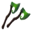
Asce primordiali di berserkirI tuoi istinti più primitivi prendono il sopravvento e la natura intorno a te ti aiuta a compiere le tue gesta.
Come ottenerlo
- Fabbricare: Forgia nera (livello 4) da 1 ×
 Ascia del berserkir, 5 ×
Ascia del berserkir, 5 ×  Fiammetal, 1 ×
Fiammetal, 1 ×  Giada · per miglioramento: 5 × Fiammetal, 1 × Giada
Giada · per miglioramento: 5 × Fiammetal, 1 × Giada
 Asce sanguinanti di berserkir
Asce sanguinanti di berserkir
Più la tua morte è vicina, più forti saranno i tuoi colpi.
Come ottenerlo
- Fabbricare: Forgia nera (livello 4) da 1 × Ascia del berserkir, 5 × Fiammetal, 1 ×
 Pietra del sangue · per miglioramento: 5 × Fiammetal, 1 × Pietra del sangue
Pietra del sangue · per miglioramento: 5 × Fiammetal, 1 × Pietra del sangue
Asce tuonanti di berserkir
La carneficina si espande attorno a te quando brandisci queste asce. Perfino Thor ne sarebbe orgoglioso.
Come ottenerlo
- Fabbricare: Forgia nera (livello 4) da 1 × Ascia del berserkir, 5 × Fiammetal, 1 ×
 Iolite · per miglioramento: 5 × Fiammetal, 1 × Iolite
Iolite · per miglioramento: 5 × Fiammetal, 1 × Iolite
 Ascia da battaglia
Ascia da battaglia
Un'ascia spacca-crani, la gioia di un guerriero.
Come ottenerlo
- Fabbricare: Forgia (livello 2) da 30 ×
 Corteccia antica, 35 × Ferro, 4 × Ritagli di cuoio · per miglioramento: 5 × Corteccia antica, 15 × Ferro
Corteccia antica, 35 × Ferro, 4 × Ritagli di cuoio · per miglioramento: 5 × Corteccia antica, 15 × Ferro
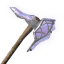
Ascia da battaglia di cristalloÈ trasparente e trapassante.
Come ottenerlo
- Fabbricare: Forgia (livello 3) da 40 × Corteccia antica, 30 ×
 Argento, 10 ×
Argento, 10 ×  Cristallo · per miglioramento: 5 × Corteccia antica, 15 × Argento
Cristallo · per miglioramento: 5 × Corteccia antica, 15 × Argento
 Ascia da battaglia di legno
Ascia da battaglia di legno
Intimidatoria, ma non quanto una vera ascia.
Come ottenerlo
- Forzieri: Capanna di tronchi abbandonata · 10 % di probabilità, Pozzo di montagna · 10 % di probabilità, Rovina di torre · 10 % di probabilità
 Ascia da battaglia in metallo nero
Ascia da battaglia in metallo nero
Il verde sarà l'ultima cosa che i tuoi nemici vedranno prima che li taglierai a metà.
Come ottenerlo
- Fabbricare: Forgia (livello 4) da 10 × Legna pregiata, 30 × Metallo nero, 5 × Filo di lino · per miglioramento: 15 × Metallo nero, 5 × Filo di lino
Ascia del berserkir
Lascia che la tua rabbia esploda e preparati al massacro.
Come ottenerlo
- Fabbricare: Forgia nera (livello 3) da 15 ×
 Osso carbonizzato, 24 × Fiammetal, 3 ×
Osso carbonizzato, 24 × Fiammetal, 3 ×  Pellame di cenerale · per miglioramento: 15 × Fiammetal, 1 × Pellame di cenerale
Pellame di cenerale · per miglioramento: 15 × Fiammetal, 1 × Pellame di cenerale
Utilizzo
- Ingrediente per: Asce primordiali di berserkir, Asce sanguinanti di berserkir, Asce tuonanti di berserkir
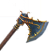
Ascia del nordUn'ascia finemente lavorata, per abbattere con grande precisione i tuoi nemici.
Come ottenerlo
- Fabbricare: Forgia nera (livello 4) da 20 × Orosangue, 1 ×
 Stampo: Ascia del nord, 10 × Legna da costruzione · per miglioramento: 10 × Orosangue, 5 × Legna da costruzione
Stampo: Ascia del nord, 10 × Legna da costruzione · per miglioramento: 10 × Orosangue, 5 × Legna da costruzione - Cuocere: Fonderia del gelo da
 Colata: Ascia del nord
Colata: Ascia del nord
Utilizzo
- Ingrediente per: Ascia di Fuocoghiaccio, Ascia di Sangue tonante
 Ascia di bronzo
Ascia di bronzo
Una lama dal colorito bruno lucente, arcuata come un sorriso.
Come ottenerlo
- Fabbricare: Forgia da 4 × Legna, 8 ×
 Bronzo, 2 × Ritagli di cuoio · per miglioramento: 4 × Bronzo, 1 × Ritagli di cuoio
Bronzo, 2 × Ritagli di cuoio · per miglioramento: 4 × Bronzo, 1 × Ritagli di cuoio
 Ascia di ferro
Ascia di ferro
Affilata e forte, amica dei taglialegna.
Come ottenerlo
- Fabbricare: Forgia (livello 2) da 4 × Legna, 20 × Ferro, 2 × Ritagli di cuoio · per miglioramento: 10 × Ferro, 1 × Ritagli di cuoio
 Ascia di Fuocoghiaccio
Ascia di Fuocoghiaccio
Riduci tutto in cenere, oppure congelalo in un eterno istante di distruzione...
Come ottenerlo
- Fabbricare: Forgia nera (livello 4) da 1 × Ascia del nord, 20 × Orosangue, 1 × Essenza di Fuocoghiaccio · per miglioramento: 10 × Orosangue, 1 × Essenza di Fuocoghiaccio
 Ascia di legno
Ascia di legno
Se quest'ascia potesse tagliare il legno, non sarebbe strano?
Come ottenerlo
- Forzieri: Nave di pietre (tomba) · 8,7 % di probabilità
 Ascia di metallo nero
Ascia di metallo nero
Un'ascia perfettamente bilanciata forgiata dal metallo scuro con una lucentezza color smeraldo.
Come ottenerlo
- Fabbricare: Forgia (livello 4) da 6 × Legna pregiata, 20 × Metallo nero, 5 × Filo di lino · per miglioramento: 10 × Metallo nero, 5 × Filo di lino
 Ascia di pietra
Ascia di pietra
Un'ascia grezza per l'abbattimento degli alberi.
Come ottenerlo
 Ascia di Sangue tonante
Ascia di Sangue tonante
Mentre questa ascia fende sia il legno che il sangue, un fragore possente risuonerà in tutta la terra.
Come ottenerlo
- Fabbricare: Forgia nera (livello 4) da 1 × Ascia del nord, 20 × Orosangue, 1 × Essenza di Sangue tonante · per miglioramento: 10 × Orosangue, 1 × Essenza di Sangue tonante
 Ascia di selce
Ascia di selce
Più affilata della pietra.
Come ottenerlo
- Fabbricare: Banco di lavoro da 4 × Legna, 6 ×
 Selce · per miglioramento: 3 × Selce, 2 × Ritagli di cuoio
Selce · per miglioramento: 3 × Selce, 2 × Ritagli di cuoio
 Ascia grande del nord
Ascia grande del nord
Un'ascia possente, degna di un grande guerriero.
Come ottenerlo
- Fabbricare: Forgia nera (livello 4) da 20 × Orosangue, 1 ×
 Modello: Ascia grande del nord, 10 × Legna da costruzione · per miglioramento: 10 × Orosangue, 5 × Legna da costruzione
Modello: Ascia grande del nord, 10 × Legna da costruzione · per miglioramento: 10 × Orosangue, 5 × Legna da costruzione - Cuocere: Fonderia del gelo da
 Colata: Ascia grande del nord
Colata: Ascia grande del nord
Utilizzo
- Ingrediente per: Ascia grande di Fuocoghiaccio, Ascia grande di Sangue tonante
 Ascia grande di Fuocoghiaccio
Ascia grande di Fuocoghiaccio
Colpisci i tuoi nemici con un inferno gelido!
Come ottenerlo
- Fabbricare: Forgia nera (livello 4) da 1 × Ascia grande del nord, 20 × Orosangue, 1 × Essenza di Fuocoghiaccio · per miglioramento: 10 × Orosangue, 1 × Essenza di Fuocoghiaccio
 Ascia grande di Sangue tonante
Ascia grande di Sangue tonante
Mentre tagli in due i tuoi nemici, il loro sangue canterà come un temporale.
Come ottenerlo
- Fabbricare: Forgia nera (livello 4) da 1 × Ascia grande del nord, 20 × Orosangue, 1 × Essenza di Sangue tonante · per miglioramento: 10 × Orosangue, 1 × Essenza di Sangue tonante
 Assassina
Assassina
Questa lama possente brama il sangue dei suoi nemici.
Come ottenerlo
- Fabbricare: Forgia nera (livello 3) da 30 × Fiammetal, 5 × Pellame di cenerale, 3 ×
 Tendine di Morgen · per miglioramento: 15 × Fiammetal, 5 × Pellame di cenerale, 3 × Tendine di Morgen
Tendine di Morgen · per miglioramento: 15 × Fiammetal, 5 × Pellame di cenerale, 3 × Tendine di Morgen
Utilizzo
- Ingrediente per: Assassina brutale, Assassina fulminante, Assassina primitiva
 Assassina brutale
Assassina brutale
Ciò che sanguina può essere ucciso.
Come ottenerlo
- Fabbricare: Forgia nera (livello 4) da 1 × Assassina, 15 × Fiammetal, 1 × Pietra del sangue · per miglioramento: 15 × Fiammetal, 1 × Pietra del sangue
 Assassina fulminante
Assassina fulminante
I fulmini vincolati in questa lama sono imprevedibili e cercano sempre qualcosa o qualcuno da colpire.
Come ottenerlo
 Assassina primitiva
Assassina primitiva
La lama funziona insieme alle forze primitive del mondo, anelando morte e massacri.
Come ottenerlo
 Asta di selce
Asta di selce
Se il tuo occhio marchia a morte una cosa, lascia che il tuo braccio invii il messaggero.
Come ottenerlo
- Fabbricare: Banco di lavoro da 5 × Legna, 10 × Selce, 2 × Ritagli di cuoio · per miglioramento: 3 × Legna, 5 × Selce, 1 × Ritagli di cuoio
 Asta di zanna
Asta di zanna
Anche nella morte, il dente del lupo soffre per la carne.
Come ottenerlo
- Fabbricare: Forgia (livello 3) da 10 × Corteccia antica, 4 ×
 Zanna di lupo, 2 × Ritagli di cuoio, 2 × Argento · per miglioramento: 5 × Corteccia antica, 2 × Zanna di lupo, 1 × Ritagli di cuoio, 1 × Argento
Zanna di lupo, 2 × Ritagli di cuoio, 2 × Argento · per miglioramento: 5 × Corteccia antica, 2 × Zanna di lupo, 1 × Ritagli di cuoio, 1 × Argento
 Atgeir del nord
Atgeir del nord
Il filo di quest'arma è tanto letale quanto lucente.
Come ottenerlo
- Fabbricare: Forgia nera (livello 4) da 20 × Orosangue, 1 ×
 Stampo: Atgeir del nord, 10 × Legna da costruzione · per miglioramento: 10 × Orosangue, 5 × Legna da costruzione
Stampo: Atgeir del nord, 10 × Legna da costruzione · per miglioramento: 10 × Orosangue, 5 × Legna da costruzione - Cuocere: Fonderia del gelo da
 Colata: Atgeir del nord
Colata: Atgeir del nord
Utilizzo
- Ingrediente per: Atgeir di Fuocoghiaccio, Atgeir di Sangue tonante
 Atgeir di bronzo
Atgeir di bronzo
Un attrezzo di un vero guerriero.
Come ottenerlo
- Fabbricare: Forgia da 10 × Legna, 8 × Bronzo, 2 × Ritagli di cuoio · per miglioramento: 4 × Bronzo
 Atgeir di ferro
Atgeir di ferro
Succhiasangue, rompicranio, portatore della morte.
Come ottenerlo
- Fabbricare: Forgia (livello 2) da 10 × Legna, 30 × Ferro, 2 × Ritagli di cuoio · per miglioramento: 15 × Ferro, 1 × Ritagli di cuoio
 Atgeir di Fuocoghiaccio
Atgeir di Fuocoghiaccio
Che le fiamme inizino a divorare, mentre il ghiaccio si impossessa di ciò che resta.
Come ottenerlo
- Fabbricare: Forgia nera (livello 4) da 1 × Atgeir del nord, 20 × Orosangue, 1 × Essenza di Fuocoghiaccio · per miglioramento: 10 × Orosangue, 1 × Essenza di Fuocoghiaccio
 Atgeir di legno
Atgeir di legno
Non farà molto male, ma ha una lunga gittata!
Come ottenerlo
- Forzieri: Capanna fuling · 17 % di probabilità, Torre di pietra (Montagne) · 17 % di probabilità, Rovina · 17 % di probabilità, Missione di Hildir: Torre sigillata · 17 % di probabilità, Villaggio fuling · 17 % di probabilità
 Atgeir di metallo nero
Atgeir di metallo nero
Una brutale ascia da taglio di metallo nero quasi indistruttibile.
Come ottenerlo
- Fabbricare: Forgia (livello 4) da 10 × Legna pregiata, 30 × Metallo nero, 5 × Filo di lino · per miglioramento: 15 × Metallo nero, 5 × Filo di lino
 Atgeir di Sangue tonante
Atgeir di Sangue tonante
I cieli intoneranno le loro lodi mentre tu farai sanguinare i tuoi nemici.
Come ottenerlo
- Fabbricare: Forgia nera (livello 4) da 1 × Atgeir del nord, 20 × Orosangue, 1 × Essenza di Sangue tonante · per miglioramento: 10 × Orosangue, 1 × Essenza di Sangue tonante
 Balestra del nord
Balestra del nord
In quest'arma è racchiusa una forza incredibile, che attende solo di essere liberata.
Come ottenerlo
- Fabbricare: Forgia nera (livello 4) da 20 × Orosangue, 1 ×
 Stampo: Balestra del nord, 10 × Legna da costruzione · per miglioramento: 10 × Orosangue, 5 × Legna da costruzione
Stampo: Balestra del nord, 10 × Legna da costruzione · per miglioramento: 10 × Orosangue, 5 × Legna da costruzione - Cuocere: Fonderia del gelo da
 Colata: Balestra del nord
Colata: Balestra del nord
Utilizzo
- Ingrediente per: Balestra di Fuocoghiaccio, Balestra di Sangue tonante
 Balestra di Fuocoghiaccio
Balestra di Fuocoghiaccio
Se i tuoi nemici non restano fermi mentre prendi la mira, lo faranno sicuramente una volta colpiti.
Come ottenerlo
- Fabbricare: Forgia nera (livello 4) da 1 × Balestra del nord, 20 × Orosangue, 1 × Essenza di Fuocoghiaccio · per miglioramento: 10 × Orosangue, 1 × Essenza di Fuocoghiaccio
 Balestra di Sangue tonante
Balestra di Sangue tonante
L'arco è teso, carico di una forza repressa, come l'aria prima che cada un fulmine.
Come ottenerlo
- Fabbricare: Forgia nera (livello 4) da 1 × Balestra del nord, 20 × Orosangue, 1 × Essenza di Sangue tonante · per miglioramento: 10 × Orosangue, 1 × Essenza di Sangue tonante
 Bastone della frattura
Bastone della frattura
Solamente le persone pazienti e concentrate riusciranno a imbrigliare il vero potere di questo bastone.
Come ottenerlo
- Fabbricare: Tavolo galdr (livello 2) da 15 × Osso carbonizzato, 5 ×
 Cenerlegno, 8 ×
Cenerlegno, 8 ×  Polvere di proustite · per miglioramento: 5 × Osso carbonizzato, 3 × Cenerlegno, 1 × Polvere di proustite
Polvere di proustite · per miglioramento: 5 × Osso carbonizzato, 3 × Cenerlegno, 1 × Polvere di proustite
 Bastone della protezione
Bastone della protezione
In cambio di una piccola offerta di sangue, racchiude chi lo utilizza in un guscio protettivo magico.
Come ottenerlo
- Fabbricare: Tavolo galdr da 20 ×
 Legno di Yggdrasil, 4 ×
Legno di Yggdrasil, 4 ×  Coagulo di sangue, 16 × Eitr raffinato · per miglioramento: 10 × Legno di Yggdrasil, 2 × Coagulo di sangue, 8 × Eitr raffinato
Coagulo di sangue, 16 × Eitr raffinato · per miglioramento: 10 × Legno di Yggdrasil, 2 × Coagulo di sangue, 8 × Eitr raffinato
 Bastone di brace
Bastone di brace
Il caldo soffocante di Múspelheim sembra una barzelletta, in confronto a ciò che può fare questo bastone...
Come ottenerlo
- Fabbricare: Tavolo galdr da 20 × Legno di Yggdrasil, 4 ×
 Cuore di surtling, 16 × Eitr raffinato · per miglioramento: 10 × Legno di Yggdrasil, 2 × Cuore di surtling, 8 × Eitr raffinato
Cuore di surtling, 16 × Eitr raffinato · per miglioramento: 10 × Legno di Yggdrasil, 2 × Cuore di surtling, 8 × Eitr raffinato
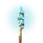
Bastone di geloUn bastone freddo come un inverno lungo tre anni, che preannuncia la fine dei tempi.
Come ottenerlo
- Fabbricare: Tavolo galdr da 20 × Legno di Yggdrasil, 4 ×
 Ghiandola congelada, 16 × Eitr raffinato · per miglioramento: 10 × Legno di Yggdrasil, 2 × Ghiandola congelada, 8 × Eitr raffinato
Ghiandola congelada, 16 × Eitr raffinato · per miglioramento: 10 × Legno di Yggdrasil, 2 × Ghiandola congelada, 8 × Eitr raffinato
 Bastone selvaggio
Bastone selvaggio
Antiche forze naturali risiedono dormienti all'interno di questo bastone, pronte per essere sguinzagliate.
Come ottenerlo
- Fabbricare: Tavolo galdr (livello 2) da 15 × Cenerlegno, 10 ×
 Testa di viola, 3 ×
Testa di viola, 3 ×  Piuma celestiale, 1 × Giada · per miglioramento: 5 × Cenerlegno, 2 × Testa di viola, 3 × Piuma celestiale, 1 × Giada
Piuma celestiale, 1 × Giada · per miglioramento: 5 × Cenerlegno, 2 × Testa di viola, 3 × Piuma celestiale, 1 × Giada
 Bastroll
Bastroll
Evoca una bestia furente che causa morte e distruzione.
Come ottenerlo
- Fabbricare: Tavolo galdr (livello 2) da 15 × Osso carbonizzato, 1 ×
 Trofeo del troll, 3 × Fiammetal, 1 × Pietra del sangue · per miglioramento: 5 × Osso carbonizzato, 1 × Trofeo del troll, 3 × Fiammetal, 1 × Pietra del sangue
Trofeo del troll, 3 × Fiammetal, 1 × Pietra del sangue · per miglioramento: 5 × Osso carbonizzato, 1 × Trofeo del troll, 3 × Fiammetal, 1 × Pietra del sangue
 Boccale
Boccale
Alla salute!
Come ottenerlo
- Fabbricare: Banco di lavoro da 5 × Legna pregiata, 2 ×
 Resina
Resina
 Boccale dvergr
Boccale dvergr
Può contenere tantissimo idromele!
Come ottenerlo
- Forzieri: Miniera infestata · 6,3 % di probabilità
- Raccogliere: Torre di guardia dei dvergr, Faro dei dvergr, La Regina
 Bomba blob: catrame
Bomba blob: catrame
La sostanza appiccicosa al suo interno pulsa minacciosamente.
Come ottenerlo
- Fabbricare: Banco di lavoro da 1 ×
 Fiala con tappo, 1 ×
Fiala con tappo, 1 ×  Trofeo crescita, 3 ×
Trofeo crescita, 3 × 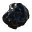
Pece
 Bomba blob: gelo
Bomba blob: gelo
Se la si tiene troppo a lungo, la mano potrebbe congelarsi.
Come ottenerlo
- Fabbricare: Banco di lavoro da 1 × Fiala con tappo, 1 ×
 Trofeo di drago, 3 × Resina
Trofeo di drago, 3 × Resina
 Bomba blob: lava
Bomba blob: lava
La fiala è calda e promette una distruzione infuocata.
Come ottenerlo
- Fabbricare: Banco di lavoro da 1 × Fiala con tappo, 10 ×
 Zolfo, 10 × Polvere di proustite
Zolfo, 10 × Polvere di proustite
 Bomba blob: Pulp
Bomba blob: Pulp
Dungeon dolce dungeon.
Come ottenerlo
- Fabbricare: Banco di lavoro da 1 × Fiala con tappo, 1 ×
 Trofeo Pulp, 3 ×
Trofeo Pulp, 3 ×  Pulp morto
Pulp morto
 Bomba blob: veleno
Bomba blob: veleno
Se questa fiala si dovesse rompere, usare la massima cautela.
Come ottenerlo
- Fabbricare: Banco di lavoro da 1 × Fiala con tappo, 1 ×
 Trofeo del sangue, 3 × Resina
Trofeo del sangue, 3 × Resina
 Bomba blob: veleno d'élite
Bomba blob: veleno d'élite
Si sconsiglia di inalarne le esalazioni.
Come ottenerlo
- Fabbricare: Banco di lavoro da 1 × Fiala con tappo, 3 × Trofeo del sangue, 3 × Resina
 Bomba di basalto
Bomba di basalto
A una temperatura sufficientemente elevata, si solidifica all'esplosione.
Come ottenerlo
- Fabbricare: 5 × Banco di lavoro da 1 × Pellame di cenerale, 1 ×
 Vescica di cenerale, 3 × Polvere di proustite
Vescica di cenerale, 3 × Polvere di proustite
 Bomba di bile
Bomba di bile
Maneggiala con cautela.
Come ottenerlo
- Fabbricare: 3 × Banco di lavoro da 1 ×
 Linfa, 1 ×
Linfa, 1 ×  Sacco di bile, 3 × Resina
Sacco di bile, 3 × Resina
 Bomba di melma
Bomba di melma
Il fetore è insopportabile ...
Come ottenerlo
- Fabbricare: 5 × Banco di lavoro da 5 × Ritagli di cuoio, 5 ×
 Melma, 3 × Resina
Melma, 3 × Resina
 Canna da pesca
Canna da pesca
Canne da pesca dvergr standard.
Come ottenerlo
- Comprare: Haldor · 350 monete
- Raccogliere: Grotta del gelo
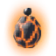
Carica di braciBraci intrappolate, pronte a divampare. Attenzione.
Come ottenerlo
- Fabbricare: 10 × Banco di lavoro da 2 ×
 Pelliccia di foca, 1 ×
Pelliccia di foca, 1 ×  Braci
Braci
 Coltello da macellaio
Coltello da macellaio
Un coltello da macellaio progettato per uccidere solo gli animali domestici.
Come ottenerlo
 Coltello di legno
Coltello di legno
Alcuni sostengono che questo coltello sia utile solo per spalmare burro.
Come ottenerlo
- Forzieri: Nave di pietre (tomba) · 8,7 % di probabilità
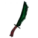
Coltello di metallo neroUna lama oscura, forte e affilata.
Come ottenerlo
- Fabbricare: Forgia (livello 4) da 4 × Legna pregiata, 10 × Metallo nero, 5 × Filo di lino · per miglioramento: 4 × Metallo nero, 5 × Filo di lino
 Coltello di rame
Coltello di rame
Un coltello di scintillante rame
Come ottenerlo
- Fabbricare: Forgia da 2 × Legna, 8 ×
 Rame · per miglioramento: 4 × Rame, 8 ×
Rame · per miglioramento: 4 × Rame, 8 ×  Occhio di nano grigio
Occhio di nano grigio
 Coltello di selce
Coltello di selce
Selce affilata, un attrezzo affidabile.
Come ottenerlo
- Fabbricare: Banco di lavoro da 2 × Legna, 4 × Selce, 2 × Ritagli di cuoio · per miglioramento: 2 × Selce
 Coltivatore
Coltivatore
Una macchina agricola per arare la terra.
Come ottenerlo
- Fabbricare: Forgia da 5 × Legno nucleo, 5 × Bronzo · per miglioramento: 1 × Legno nucleo, 1 × Bronzo
 Corno da idromele di Odino
Corno da idromele di Odino
I migliori guerrieri di Odino meritano le migliori bevande.
Come ottenerlo
- Fabbricare: Banco di lavoro da 4 × Legna pregiata, 1 ×
 Trofeo di cervo, 2 × Resina
Trofeo di cervo, 2 × Resina
 Corno delle celebrazioni
Corno delle celebrazioni
Un anno è passato da quando siamo arrivati... Prosit!
Come ottenerlo
- Fabbricare: Banco di lavoro da 2 × Bronzo, 2 ×
 Pelle di troll, 2 × Ferro
Pelle di troll, 2 × Ferro
 Dardo carbonizzato
Dardo carbonizzato
Un dardo letale creato dall'osso di un avambraccio.
Come ottenerlo
- Fabbricare: 20 × Forgia nera da 2 × Osso carbonizzato, 8 × Cenerlegno, 2 × Piume
- Forzieri: Nave di pietre (tomba) · 5–11 × · 53 % di probabilità, Villaggio del Nord · 5–11 × · 53 % di probabilità, Capanna (Nord) · 5–11 × · 52 % di probabilità, Campo dei taglialegna · 5–11 × · 52 % di probabilità, Relitto (Nord) · 3–13 × · 17 % di probabilità
 Dardo di carapace
Dardo di carapace
Un dardo robusto e pesante.
Come ottenerlo
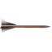
Dardo di ferroUn solido missile di ferro.
Come ottenerlo
 Dardo di metallo scuro
Dardo di metallo scuro
Un dardo lucente fatto di metallo scuro.
Come ottenerlo
- Fabbricare: 20 × Forgia nera (livello 2) da 2 × Metallo nero, 8 × Legna, 2 × Piume
 Dardo di Orosangue
Dardo di Orosangue
Un dardo forgiato forse con i materiali più duri al mondo...
Come ottenerlo
- Fabbricare: 20 × Forgia nera da 1 × Orosangue, 8 × Legna da costruzione, 2 × Piume
 Dardo di osso
Dardo di osso
Un dardo essenziale, fatto di osso ingiallito.
Come ottenerlo
- Fabbricare: 20 × Forgia nera da 8 × Frammenti di ossa, 2 × Piume
 Devastazione
Devastazione
Questa potente slitta non vede l'ora di portare il caos.
Come ottenerlo
- Fabbricare: Forgia nera da 10 × Legno di Yggdrasil, 20 × Ferro, 10 × Eitr raffinato · per miglioramento: 2 × Legno di Yggdrasil, 15 × Ferro, 2 × Eitr raffinato
 Dundr
Dundr
Ciò che accadrà ora, potrebbe sconvolgerti.
Come ottenerlo
- Fabbricare: Tavolo galdr (livello 2) da 10 × Cenerlegno, 4 × Fiammetal, 3 × Piuma celestiale, 1 × Pietra del sangue · per miglioramento: 5 × Cenerlegno, 2 × Fiammetal, 3 × Piuma celestiale, 1 × Pietra del sangue
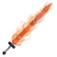
DyrnwynLa spada che era stata spezzata è nuovamente integra. Le sue fiamme bruciano, alimentate dai ricordi di antichi guerrieri.
Come ottenerlo
- Fabbricare: Forgia nera (livello 4) da 1 ×
 Frammento dell'elsa di Dyrnwyn, 1 ×
Frammento dell'elsa di Dyrnwyn, 1 ×  Frammento di lama di Dyrnwyn, 1 × Frammento della punta di Dyrnwyn, 20 × Fiammetal, 1 × Pietra del sangue · per miglioramento: 10 × Fiammetal, 1 × Pietra del sangue
Frammento di lama di Dyrnwyn, 1 × Frammento della punta di Dyrnwyn, 20 × Fiammetal, 1 × Pietra del sangue · per miglioramento: 10 × Fiammetal, 1 × Pietra del sangue
 Esca appiccicosa
Esca appiccicosa
Avrà anche un pessimo odore, ma i pesci che attira sono abituati a odori ben peggiori.
Come ottenerlo
- Fabbricare: 20 × Tavolo per la preparazione del cibo da 20 ×
 Esca da pesca, 1 ×
Esca da pesca, 1 ×  Trofeo dell'Abominio
Trofeo dell'Abominio
Utilizzo
- Esca per: Aringa gigante
 Esca da acque calde
Esca da acque calde
Alcuni pesci amano le acque calde e con quest'esca la temperatura dell'acqua diventa quasi bollente.
Come ottenerlo
- Fabbricare: 20 × Tavolo per la preparazione del cibo da 20 × Esca da pesca, 1 ×
 Trofeo di guerriero
Trofeo di guerriero
Utilizzo
- Esca per: Pesce lava
 Esca da acque fredde
Esca da acque fredde
Questa esca non sembra un granché, ma è una delizia per i pesci che vivono in luoghi freddi e oscuri.
Come ottenerlo
- Fabbricare: 20 × Tavolo per la preparazione del cibo da 20 × Esca da pesca, 1 ×
 Trofeo del fenring
Trofeo del fenring
Utilizzo
- Esca per: Tetra
 Esca da acque torbide
Esca da acque torbide
Un'esca che attira i pesci verso di te in acque torbide.
Come ottenerlo
- Fabbricare: 20 × Tavolo per la preparazione del cibo da 20 × Esca da pesca, 1 ×
 Trofeo di Lox
Trofeo di Lox
Utilizzo
- Esca per: Luccio, Pesce palla
Esca da pesca
Una comune esca dvergr. Canna da pesca venduta separatamente.
Come ottenerlo
- Comprare: Haldor · 10 monete (× 20)
- Raccogliere: Grotta del gelo · 2–4 ×
Utilizzo
- Ingrediente per: Esca appiccicosa, Esca da acque calde, Esca da acque fredde, Esca da acque torbide, Esca ghiacciata, Esca muschiata, Esca pesante, Esca pungente
- Esca per: Luccio, Pesce persico
 Esca ghiacciata
Esca ghiacciata
Non è molto nutriente, perciò gli unici pesci che abboccheranno sono quelli abituati a nutrirsi di ghiaccio.
Come ottenerlo
- Fabbricare: 20 × Tavolo per la preparazione del cibo da 20 × Esca da pesca, 1 × Trofeo di drago
Utilizzo
- Esca per: Salmone dell'Atlantico
 Esca muschiata
Esca muschiata
I troll morti nella foresta spesso attirano uno o due pesci, velocizza il tutto con quest'esca!
Come ottenerlo
- Fabbricare: 20 × Tavolo per la preparazione del cibo da 20 × Esca da pesca, 1 × Trofeo del troll
Utilizzo
- Esca per: Pesce troll
 Esca pesante
Esca pesante
Quest'esca arriva a grandi profondità, tanto da attirare i pesci che nuotano sul fondale marino.
Come ottenerlo
- Fabbricare: 20 × Tavolo per la preparazione del cibo da 20 × Esca da pesca, 1 ×
 Trofeo del serpente
Trofeo del serpente
Utilizzo
- Esca per: Cernia dei coralli, Tonno
 Esca pungente
Esca pungente
Tu non sei immune ai morsi di mortzanzara, così come i pesci non sono immuni al fascino di questo spuntino!
Come ottenerlo
- Fabbricare: 20 × Tavolo per la preparazione del cibo da 20 × Esca da pesca, 1 ×
 Trofeo del fuling
Trofeo del fuling
Utilizzo
- Esca per: Cernia
 Evocatore di spiriti
Evocatore di spiriti
Evoca un aiuto ultraterreno. Ti costerà solo una goccia del tuo sangue...
Come ottenerlo
- Fabbricare: Tavolo galdr (livello 3) da 8 ×
 Ramo ghiacciato, 5 ×
Ramo ghiacciato, 5 ×  Fil di Norna, 1 ×
Fil di Norna, 1 ×  Trofeo dell'alce · per miglioramento: 4 × Ramo ghiacciato, 2 × Fil di Norna
Trofeo dell'alce · per miglioramento: 4 × Ramo ghiacciato, 2 × Fil di Norna - Cuocere: Fonderia del gelo da
 Colata: Bastone evoca spiriti
Colata: Bastone evoca spiriti
 Falce
Falce
L'attrezzo giusto rende più semplice il lavoro da svolgere.
Come ottenerlo
- Fabbricare: Forgia (livello 2) da 1 ×
 Manico di falce, 6 × Argento · per miglioramento: 5 × Argento
Manico di falce, 6 × Argento · per miglioramento: 5 × Argento
 Fenditrice della nebbia
Fenditrice della nebbia
Il suo lieve bagliore sembra fendere la nebbia.
Come ottenerlo
- Fabbricare: Forgia nera da 3 × Legna pregiata, 15 × Ferro, 10 × Eitr raffinato, 3 ×
 Fuoco fatuo · per miglioramento: 10 × Ferro, 5 × Eitr raffinato, 1 × Fuoco fatuo
Fuoco fatuo · per miglioramento: 10 × Ferro, 5 × Eitr raffinato, 1 × Fuoco fatuo
 Freccia a spillo
Freccia a spillo
L'ultima cucitura.
Come ottenerlo
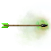
Freccia avvelenataUna fitta pungente sopraggiunta da lontano.
Come ottenerlo
- Fabbricare: 20 × Banco di lavoro (livello 3) da 8 × Legna, 4 ×
 Ossidiana, 2 × Piume, 2 × Melma
Ossidiana, 2 × Piume, 2 × Melma - Forzieri: Rovina della palude (torre) · 10–15 × · 37 % di probabilità, Cimitero · 10–15 × · 37 % di probabilità, Cripta sommersa · 10–15 × · 36 % di probabilità
 Freccia carbonizzata
Freccia carbonizzata
Questa freccia è stata creata e formata a partire da un femore carbonizzato ed è dura come un metallo.
Come ottenerlo
- Fabbricare: 20 × Forgia nera da 4 × Osso carbonizzato, 2 × Piume, 8 × Cenerlegno
- Forzieri: Nave di pietre (tomba) · 5–11 × · 53 % di probabilità, Villaggio del Nord · 5–11 × · 53 % di probabilità, Capanna (Nord) · 5–11 × · 52 % di probabilità, Campo dei taglialegna · 5–11 × · 52 % di probabilità, Mörk Borg · 5–11 × · 48 % di probabilità, Relitto (Nord) · 3–13 × · 17 % di probabilità
 Freccia con punta di bronzo
Freccia con punta di bronzo
Più affilata di quella di selce, un'agile messaggera di morte.
Come ottenerlo
 Freccia con punta di ferro
Freccia con punta di ferro
Coperto di ferro e decorato con piume scure
Come ottenerlo
- Fabbricare: 20 × Forgia (livello 2) da 8 × Legna, 1 × Ferro, 2 × Piume
- Forzieri: Rovina della palude (torre) · 10–15 × · 37 % di probabilità, Cimitero · 10–15 × · 37 % di probabilità, Cripta sommersa · 10–15 × · 36 % di probabilità
 Freccia con punta di selce
Freccia con punta di selce
Un rompi pelliccia con una testa di pietra focaia
Come ottenerlo
- Fabbricare: 20 × Banco di lavoro (livello 2) da 8 × Legna, 2 × Selce, 2 × Piume
- Forzieri: Rovina di combattimento · 10–20 × · 50 % di probabilità, Rovina di torre · 5–10 × · 48 % di probabilità, Rovina · 5–10 × · 48 % di probabilità, Capanna della palude · 5–10 × · 48 % di probabilità, Rovina di torre sommersa · 5–10 × · 48 % di probabilità, Grotta dei troll · 5–10 × · 48 % di probabilità, Rovina di casa in pietra · 5–10 × · 48 % di probabilità, Camere sepolcrali (Foresta Nera) · 5–10 × · 46 % di probabilità, Missione di Hildir: Tomba fumante · 5–10 × · 46 % di probabilità, Casa di legno abbandonata · 10–20 × · 28–36 % di probabilità, Fattoria abbandonata · 10–20 × · 36 % di probabilità, Villaggio dei draugr · 10–20 × · 36 % di probabilità
 Freccia d'argento
Freccia d'argento
Placa gli spiriti pestiferi.
Come ottenerlo
 Freccia di carapace
Freccia di carapace
Pesante e appuntita, dolore garantito.
Come ottenerlo
- Fabbricare: 20 × Forgia nera da 4 ×
 Carapace, 2 × Piume, 8 × Legna
Carapace, 2 × Piume, 8 × Legna - Forzieri: Buco putrido (Morgen) · 3–12 × · 46 % di probabilità
 Freccia di legno
Freccia di legno
Una freccia di legno appuntito
Come ottenerlo
- Fabbricare: 20 × Banco di lavoro da 8 × Legna
 Freccia di Orosangue
Freccia di Orosangue
Una freccia forgiata forse con i materiali più duri al mondo...
Come ottenerlo
- Fabbricare: 20 × Forgia nera da 1 × Orosangue, 2 × Piume, 8 × Legna da costruzione
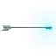
Freccia gelataUna scheggia di ghiaccio penetrante.
Come ottenerlo
- Fabbricare: 20 × Banco di lavoro (livello 4) da 8 × Legna, 4 × Ossidiana, 2 × Piume, 1 × Ghiandola congelada
- Forzieri: Capanna di tronchi abbandonata · 5–10 × · 44 % di probabilità, Pozzo di montagna · 5–10 × · 44 % di probabilità, Rovina di torre · 5–10 × · 44 % di probabilità
 Freccia infuocata
Freccia infuocata
Questa freccia brucia qualsiasi cosa trapassi
Come ottenerlo
- Fabbricare: 20 × Banco di lavoro (livello 2) da 8 × Legna, 8 × Resina, 2 × Piume
- Forzieri: Nave di pietre (tomba) · 10–15 × · 39 % di probabilità
 Freccia ossidiana
Freccia ossidiana
Un frammento delle tenebre.
Come ottenerlo
- Fabbricare: 20 × Banco di lavoro (livello 3) da 8 × Legna, 4 × Ossidiana, 2 × Piume
- Forzieri: Stonehenge · 5–10 × · 62 % di probabilità
 Frostner
Frostner
I morti temono l'argento. Ricorda loro il perché.
Come ottenerlo
- Fabbricare: Forgia (livello 3) da 10 × Corteccia antica, 30 × Argento, 5 ×
 Carne di Ymir, 5 × Ghiandola congelada · per miglioramento: 15 × Argento
Carne di Ymir, 5 × Ghiandola congelada · per miglioramento: 15 × Argento
 Fulmine
Fulmine
Basta puntare il dito e scatenerai l'ira del cielo.
Come ottenerlo
- Fabbricare: Tavolo galdr (livello 3) da 10 × Orosangue, 5 × Fil di Norna, 1 × Essenza di Sangue tonante · per miglioramento: 5 × Orosangue, 2 × Fil di Norna, 1 × Essenza di Sangue tonante
- Cuocere: Fonderia del gelo da
 Colata: Bastone dei fulmini
Colata: Bastone dei fulmini
 Fumogeno
Fumogeno
Lo sanno tutti che non si può respirare nel fumo.
Come ottenerlo
- Fabbricare: 10 × Banco di lavoro da 1 ×
 Sporafumo, 1 × Vescica di cenerale
Sporafumo, 1 × Vescica di cenerale
 Gancio da arrampicata
Gancio da arrampicata
Per un ingresso in scena di grande effetto o una fuga veloce.
Come ottenerlo
- Fabbricare: Forgia nera da 10 × Legno di Yggdrasil, 10 × Eitr raffinato, 4 ×
 Mandibola, 1 ×
Mandibola, 1 ×  Gancio
Gancio
 Himmin afl
Himmin afl
Non sarà un martello, ma anche Thor in persona sarebbe soddisfatto di quest'arma.
Come ottenerlo
- Fabbricare: Forgia nera da 10 × Legno di Yggdrasil, 15 × Eitr raffinato, 5 × Argento, 2 × Mandibola · per miglioramento: 15 × Eitr raffinato, 5 × Argento, 2 × Mandibola
 Klossen
Klossen
Se la potenza del colpo non è sufficiente a scaraventare a terra i tuoi nemici, allora saranno le radici primordiali a immobilizzarli per te.
Come ottenerlo
- Fabbricare: Forgia nera (livello 4) da 1 ×
 Mazza di fiammetal, 8 × Fiammetal, 1 × Giada · per miglioramento: 8 × Fiammetal, 1 × Giada
Mazza di fiammetal, 8 × Fiammetal, 1 × Giada · per miglioramento: 8 × Fiammetal, 1 × Giada
 Krom
Krom
Tanto mortale quanto lucente... Ed è molto lucente.
Come ottenerlo
- Fabbricare: Forgia nera da 30 × Ferro, 20 × Bronzo, 5 ×
 Pelle squamata · per miglioramento: 15 × Ferro, 10 × Bronzo, 5 × Pelle squamata
Pelle squamata · per miglioramento: 15 × Ferro, 10 × Bronzo, 5 × Pelle squamata
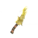
Lama degli abissiUn coltello dagli abissi.
Come ottenerlo
- Fabbricare: Banco di lavoro (livello 2) da 4 × Legna pregiata, 20 × Chitina, 2 × Ritagli di cuoio · per miglioramento: 10 × Chitina
 Lancia del nord
Lancia del nord
Un'occasione d'oro per colpire.
Come ottenerlo
- Fabbricare: Forgia nera (livello 4) da 20 × Orosangue, 1 ×
 Stampo: Lancia del nord, 10 × Legna da costruzione · per miglioramento: 10 × Orosangue, 5 × Legna da costruzione
Stampo: Lancia del nord, 10 × Legna da costruzione · per miglioramento: 10 × Orosangue, 5 × Legna da costruzione - Cuocere: Fonderia del gelo da
 Colata: Lancia del nord
Colata: Lancia del nord
Utilizzo
- Ingrediente per: Lancia di Fuocoghiaccio, Lancia di Sangue tonante
 Lancia di bronzo
Lancia di bronzo
Una lancia robusta con una testa di bronzo brunito.
Come ottenerlo
- Fabbricare: Forgia da 5 × Legna, 6 × Bronzo, 2 × Pelle di cervo · per miglioramento: 3 × Legna, 4 × Bronzo, 1 × Pelle di cervo
 Lancia di carapace
Lancia di carapace
Questa lancia, affilata alla perfezione, è una sentenza di morte sicura.
Come ottenerlo
- Fabbricare: Forgia nera da 10 × Legno di Yggdrasil, 4 × Carapace, 2 × Mandibola · per miglioramento: 5 × Legno di Yggdrasil, 4 × Carapace, 1 × Mandibola
 Lancia di corteccia antica
Lancia di corteccia antica
Nonostante il suo aspetto nodoso, questa lancia è forte e perfettamente equilibrata.
Come ottenerlo
- Fabbricare: Forgia (livello 3) da 4 × Pelle di troll, 10 × Ferro, 10 × Corteccia antica · per miglioramento: 1 × Pelle di troll, 5 × Ferro, 5 × Corteccia antica
 Lancia di Fuocoghiaccio
Lancia di Fuocoghiaccio
Avvolta da fiamme gelide, questa lancia porta con sé una morte certa.
Come ottenerlo
- Fabbricare: Forgia nera (livello 4) da 1 × Lancia del nord, 20 × Orosangue, 1 × Essenza di Fuocoghiaccio · per miglioramento: 10 × Orosangue, 1 × Essenza di Fuocoghiaccio
 Lancia di legno
Lancia di legno
È affilata come una vera lancia… se una vera lancia fosse fatta di legno.
Come ottenerlo
- Forzieri: Rovina di torre · 11 % di probabilità, Rovina · 11 % di probabilità, Capanna della palude · 11 % di probabilità, Rovina di torre sommersa · 11 % di probabilità, Grotta dei troll · 11 % di probabilità, Rovina di casa in pietra · 11 % di probabilità
 Lancia di Sangue tonante
Lancia di Sangue tonante
Possa colpire come un fulmine, veloce e violento.
Come ottenerlo
- Fabbricare: Forgia nera (livello 4) da 1 × Lancia del nord, 20 × Orosangue, 1 × Essenza di Sangue tonante · per miglioramento: 10 × Orosangue, 1 × Essenza di Sangue tonante
Lanterna dvergr
Una semplice torcia sarebbe fuori moda.
Come ottenerlo
- Fabbricare: Forgia nera da 2 × Bronzo, 1 × Cuore di surtling, 1 × Cristallo
- Raccogliere: Scavo dei dvergr, Torre di guardia dei dvergr, Rovina di torre carbonizzata, Faro dei dvergr, La Regina
Utilizzo
- Materiale da costruzione per: Lanterna da parete dvergr, Palo per lanterna dvergr
 Martello
Martello
Con questo nelle tue mani, puoi alzare alte sale e possenti fortificazioni.
Come ottenerlo
 Mazza del nord
Mazza del nord
Colpisci con forza e rapidità, senza lasciare al tuo avversario il tempo di riprendersi.
Come ottenerlo
- Fabbricare: Forgia nera (livello 4) da 20 × Orosangue, 1 ×
 Stampo: Mazza del nord, 10 × Legna da costruzione · per miglioramento: 10 × Orosangue, 5 × Legna da costruzione
Stampo: Mazza del nord, 10 × Legna da costruzione · per miglioramento: 10 × Orosangue, 5 × Legna da costruzione - Cuocere: Fonderia del gelo da
 Colata: Mazza del nord
Colata: Mazza del nord
Utilizzo
- Ingrediente per: Mazza di Fuocoghiaccio, Mazza di Sangue tonante
 Mazza di bronzo
Mazza di bronzo
Emicrania su un bastone.
Come ottenerlo
- Fabbricare: Forgia da 4 × Legna, 8 × Bronzo, 3 × Ritagli di cuoio · per miglioramento: 4 × Bronzo
 Mazza di ferro
Mazza di ferro
Un grumo di ferro della misura di un pugno su un'asta di legno.
Come ottenerlo
- Fabbricare: Forgia (livello 2) da 4 × Legna, 20 × Ferro, 3 × Ritagli di cuoio · per miglioramento: 10 × Ferro
 Mazza di ferro
Mazza di ferro
Un martello potente, degno di un campione.
Come ottenerlo
- Fabbricare: Forgia (livello 2) da 10 × Corteccia antica, 30 × Ferro, 4 × Carne di Ymir, 1 ×
 Trofeo del Non morto d'elite · per miglioramento: 2 × Corteccia antica, 15 × Ferro, 2 × Carne di Ymir
Trofeo del Non morto d'elite · per miglioramento: 2 × Corteccia antica, 15 × Ferro, 2 × Carne di Ymir
Mazza di fiammetal
Una mazza di fiammetal pesante e appuntita: ideale per spaccare la faccia al nemico.
Come ottenerlo
- Fabbricare: Forgia nera (livello 3) da 10 × Osso carbonizzato, 15 × Fiammetal, 5 × Zolfo, 3 × Pellame di cenerale · per miglioramento: 5 × Osso carbonizzato, 8 × Fiammetal, 3 × Zolfo, 2 × Pellame di cenerale
Utilizzo
- Ingrediente per: Klossen, Sanguello, Stella della tempesta
 Mazza di Fuocoghiaccio
Mazza di Fuocoghiaccio
Sono scintille quelle che schizzano quando quest'arma colpisce il bersaglio, o sono schegge di ghiaccio?
Come ottenerlo
- Fabbricare: Forgia nera (livello 4) da 1 × Mazza del nord, 20 × Orosangue, 1 × Essenza di Fuocoghiaccio · per miglioramento: 10 × Orosangue, 1 × Essenza di Fuocoghiaccio
 Mazza di legno
Mazza di legno
C'è da chiedersi perché qualcuno abbia realizzato questa mazza invece di usare un semplice bastone.
Come ottenerlo
- Forzieri: Villaggio dei draugr · 1–4 × · 32 % di probabilità, Rovina di combattimento · 6 % di probabilità
 Mazza di Sangue tonante
Mazza di Sangue tonante
Un'arma in grado di rivaleggiare forse persino con quella dello stesso dio del tuono...
Come ottenerlo
- Fabbricare: Forgia nera (livello 4) da 1 × Mazza del nord, 20 × Orosangue, 1 × Essenza di Sangue tonante · per miglioramento: 10 × Orosangue, 1 × Essenza di Sangue tonante
 Mazzuolo del nord
Mazzuolo del nord
Con quest'arma, i tuoi colpi saranno potenti come quelli di un troll.
Come ottenerlo
- Fabbricare: Forgia nera (livello 4) da 20 × Orosangue, 1 ×
 Stampo: Mazzuolo del nord, 10 × Legna da costruzione · per miglioramento: 10 × Orosangue, 5 × Legna da costruzione
Stampo: Mazzuolo del nord, 10 × Legna da costruzione · per miglioramento: 10 × Orosangue, 5 × Legna da costruzione - Cuocere: Fonderia del gelo da
 Colata: Mazzuolo del nord
Colata: Mazzuolo del nord
Utilizzo
- Ingrediente per: Mazzuolo di Fuocoghiaccio, Mazzuolo di Sangue tonante
 Mazzuolo di Fuocoghiaccio
Mazzuolo di Fuocoghiaccio
È così freddo da bruciare, o è così ardente che congela?
Come ottenerlo
- Fabbricare: Forgia nera (livello 4) da 1 × Mazzuolo del nord, 20 × Orosangue, 1 × Essenza di Fuocoghiaccio · per miglioramento: 10 × Orosangue, 1 × Essenza di Fuocoghiaccio
 Mazzuolo di legno
Mazzuolo di legno
Probabilmente dovrebbe fare più male di quanto non sembri.
Come ottenerlo
- Forzieri: Rovina della palude (torre) · 20 % di probabilità, Cimitero · 20 % di probabilità
 Mazzuolo di Sangue tonante
Mazzuolo di Sangue tonante
Quando quest'arma colpirà nel segno, il suo fragore risuonerà in tutto il mondo...
Come ottenerlo
- Fabbricare: Forgia nera (livello 4) da 1 × Mazzuolo del nord, 20 × Orosangue, 1 × Essenza di Sangue tonante · per miglioramento: 10 × Orosangue, 1 × Essenza di Sangue tonante
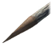
Missile di legnoGli spessi missili di legno possono costituire una solida difesa dagli avversari.
Come ottenerlo
- Fabbricare: 20 × Tavolo da artigiano da 5 × Legno nucleo, 2 × Piume
 Missile di metallo nero
Missile di metallo nero
Questi spessi missili possono perforare anche la pelle degli avversari più resistenti.
Come ottenerlo
- Fabbricare: 20 × Tavolo da artigiano da 10 × Legna, 1 × Metallo nero
 Missile di Orosangue
Missile di Orosangue
Il tuo avversario non avrà alcuna possibilità quando questo proiettile colpirà il bersaglio.
Come ottenerlo
- Fabbricare: 20 × Tavolo da artigiano da 10 × Legna da costruzione, 1 × Orosangue
 Nidhögg
Nidhögg
Questa spada, che prende il nome dal malvagio drago che si annida tra le radici dell'albero del mondo, preannuncia sventura a chiunque le intralci il cammino.
Come ottenerlo
- Fabbricare: Forgia nera (livello 3) da 3 × Osso carbonizzato, 12 × Fiammetal, 2 × Pellame di cenerale · per miglioramento: 10 × Fiammetal, 2 × Pellame di cenerale
Utilizzo
- Ingrediente per: Nidhögg la Primitiva, Nidhögg la Sanguinante, Nidhögg la Tuonante
 Nidhögg la Primitiva
Nidhögg la Primitiva
Intrappola i tuoi nemici nelle radici, come fa intuire il nome di questa spada.
Come ottenerlo
 Nidhögg la Sanguinante
Nidhögg la Sanguinante
Se sanguini, lo faranno anche i tuoi nemici.
Come ottenerlo
- Fabbricare: Forgia nera (livello 4) da 1 × Nidhögg, 6 × Fiammetal, 1 × Pietra del sangue · per miglioramento: 6 × Fiammetal, 1 × Pietra del sangue
 Nidhögg la Tuonante
Nidhögg la Tuonante
Il potere dei fulmini danza sopra alla lama di questa spada. Un presagio del dolore che verrà.
Come ottenerlo
 Pala da neve
Pala da neve
Utile per rimuovere anche la neve più alta.
Come ottenerlo
- Fabbricare: Forgia nera (livello 3) da 5 × Legna pregiata, 4 × Fiammetal, 2 × Braci · per miglioramento: 1 × Legna pregiata, 10 × Fiammetal
 Palla di neve
Palla di neve
Sembra un oggetto perfetto per essere lanciato...
Come ottenerlo
- Raccogliere: A terra o allo stato selvatico · Alto nord
- Lasciato da: Nano grigio · Alto nord
- Fabbricare: 10 × senza banco da lavoro da 5 ×
 Ghiaccio
Ghiaccio
Utilizzo
- Materiale da costruzione per: Lanterna di neve
 Piccone di metallo nero
Piccone di metallo nero
Un potente piccone di metallo scuro lucente.
Come ottenerlo
- Fabbricare: Forgia (livello 2) da 3 × Legno di Yggdrasil, 25 × Metallo nero · per miglioramento: 1 × Legno di Yggdrasil, 15 × Metallo nero
 Piccozza di bronzo
Piccozza di bronzo
Una piccozza di bronzo di qualità. Può frantumare rocce molto dure.
Come ottenerlo
- Fabbricare: Forgia da 3 × Legno nucleo, 10 × Bronzo · per miglioramento: 1 × Legno nucleo, 5 × Bronzo
 Piccozza di corna di cervo
Piccozza di corna di cervo
Questo strumento è abbastanza resistente da rompere anche le rocce più testarde.
Come ottenerlo
- Fabbricare: Banco di lavoro da 10 × Legna, 1 ×
 Corna dure
Corna dure
 Piccozza di ferro
Piccozza di ferro
Un attrezzo resistente di ferro indurito
Come ottenerlo
- Fabbricare: Forgia (livello 2) da 3 × Legno nucleo, 20 × Ferro · per miglioramento: 1 × Legno nucleo, 10 × Ferro
 Porcospino
Porcospino
Un'arma mortale, irta di diabolici aculei.
Come ottenerlo
- Fabbricare: Forgia (livello 4) da 5 × Legna pregiata, 20 × Ferro, 5 ×
 Ago, 10 × Filo di lino · per miglioramento: 2 × Ferro, 2 × Ago
Ago, 10 × Filo di lino · per miglioramento: 2 × Ferro, 2 × Ago
 Proiettile di fiammetal
Proiettile di fiammetal
Forgiato da uno dei metalli più resistenti di Valheim, questo proiettile terrà sicuramente a bada i tuoi nemici.
Come ottenerlo
- Fabbricare: 20 × Tavolo da artigiano da 10 × Cenerlegno, 1 × Fiammetal
 Pugnale d'argento
Pugnale d'argento
Un selvaggio pezzo di dolore.
Come ottenerlo
- Fabbricare: Forgia (livello 3) da 2 × Legna, 10 × Argento, 3 × Ritagli di cuoio, 2 × Ferro · per miglioramento: 1 × Legna, 5 × Argento, 1 × Ritagli di cuoio, 1 × Ferro
 Pugnale del nord
Pugnale del nord
Un lampo dorato sarà l'ultima cosa che vedranno i tuoi nemici.
Come ottenerlo
- Fabbricare: Forgia nera (livello 4) da 20 × Orosangue, 1 ×
 Stampo: Pugnale del nord, 10 × Legna da costruzione · per miglioramento: 10 × Orosangue, 5 × Legna da costruzione
Stampo: Pugnale del nord, 10 × Legna da costruzione · per miglioramento: 10 × Orosangue, 5 × Legna da costruzione - Cuocere: Fonderia del gelo da
 Colata: Pugnale del nord
Colata: Pugnale del nord
Utilizzo
- Ingrediente per: Pugnale di Fuocoghiaccio, Pugnale di Sangue tonante
 Pugnale di Fuocoghiaccio
Pugnale di Fuocoghiaccio
Un taglio inflitto da questa lama punge come il ghiaccio, poi brucia come una fiamma.
Come ottenerlo
- Fabbricare: Forgia nera (livello 4) da 1 × Pugnale del nord, 20 × Orosangue, 1 × Essenza di Fuocoghiaccio · per miglioramento: 10 × Orosangue, 1 × Essenza di Fuocoghiaccio
 Pugnale di Sangue tonante
Pugnale di Sangue tonante
La lama è già insanguinata, eppure brama altro sangue.
Come ottenerlo
- Fabbricare: Forgia nera (livello 4) da 1 × Pugnale del nord, 20 × Orosangue, 1 × Essenza di Sangue tonante · per miglioramento: 10 × Orosangue, 1 × Essenza di Sangue tonante
 Radice strappatrice
Radice strappatrice
Se il dardo non ferma il tuo nemico, ci penseranno le radici che escono dal terreno.
Come ottenerlo
- Fabbricare: Forgia nera (livello 4) da 1 ×
 Strappatrice, 8 × Fiammetal, 1 × Giada · per miglioramento: 8 × Fiammetal, 1 × Giada
Strappatrice, 8 × Fiammetal, 1 × Giada · per miglioramento: 8 × Fiammetal, 1 × Giada
 Randello
Randello
Una grezza ma utile arma
Come ottenerlo
- Fabbricare: senza banco da lavoro da 6 × Legna · per miglioramento: 5 × Frammenti di ossa
 Sanguello
Sanguello
Questa mazza assorbe il sangue come una spugna e ne richiede sempre dell'altro.
Come ottenerlo
- Fabbricare: Forgia nera (livello 4) da 1 × Mazza di fiammetal, 8 × Fiammetal, 1 × Pietra del sangue · per miglioramento: 8 × Fiammetal, 1 × Pietra del sangue
 Scheggiacrani
Scheggiacrani
Troverai crani da spaccare anche nelle nebbie della boscaglia.
Come ottenerlo
- Fabbricare: Forgia nera da 30 × Ferro, 15 × Legno di Yggdrasil, 10 × Eitr raffinato · per miglioramento: 15 × Ferro, 5 × Legno di Yggdrasil
 Scintillante
Scintillante
Un bastone scintillante. Che bello!
Come ottenerlo
- Comprare: Hildir · 150 monete
 Skoll e Hati
Skoll e Hati
Una pugnalata a chi ha tradito la tua fiducia, due pugnalate alle persone che odi.
Come ottenerlo
- Fabbricare: Forgia nera da 4 × Legna pregiata, 10 × Ferro, 10 × Metallo nero · per miglioramento: 4 × Ferro, 4 × Metallo nero
 Spaccacervi
Spaccacervi
Un'arma degna degli dei! Se verrai colpito da essa, te ne accorgerai...
Come ottenerlo
- Fabbricare: Banco di lavoro (livello 2) da 20 × Legno nucleo, 5 × Trofeo di cervo, 2 × Ritagli di cuoio · per miglioramento: 5 × Legno nucleo, 2 × Trofeo di cervo, 1 × Ritagli di cuoio, 10 × Frammenti di ossa
 Spaccaschiena
Spaccaschiena
Usare questo arco è faticosissimo, ma ne vale la pena.
Come ottenerlo
- Fabbricare: Forgia nera da 10 × Legna pregiata, 40 × Frammenti di ossa, 10 × Eitr raffinato · per miglioramento: 5 × Legna pregiata, 20 × Frammenti di ossa
 Spada d'argento
Spada d'argento
Il più puro dei metalli, il suo tocco castiga tutto ciò che è immondo.
Come ottenerlo
- Fabbricare: Forgia (livello 3) da 2 × Legna, 40 × Argento, 3 × Ritagli di cuoio, 5 × Ferro · per miglioramento: 1 × Legna, 20 × Argento, 1 × Ritagli di cuoio, 3 × Ferro
 Spada del nord
Spada del nord
Anche alla luce più fioca del sole, quest'arma brilla.
Come ottenerlo
- Fabbricare: Forgia nera (livello 4) da 20 × Orosangue, 1 ×
 Stampo: Spada del nord, 10 × Legna da costruzione · per miglioramento: 10 × Orosangue, 5 × Legna da costruzione
Stampo: Spada del nord, 10 × Legna da costruzione · per miglioramento: 10 × Orosangue, 5 × Legna da costruzione - Cuocere: Fonderia del gelo da
 Colata: Spada del nord
Colata: Spada del nord
Utilizzo
- Ingrediente per: Spada di Fuocoghiaccio, Spada di Sangue tonante
 Spada di bronzo
Spada di bronzo
Bevitore di sangue, un amico assetato
Come ottenerlo
- Fabbricare: Forgia da 2 × Legna, 8 × Bronzo, 2 × Ritagli di cuoio · per miglioramento: 1 × Legna, 4 × Bronzo, 1 × Ritagli di cuoio
 Spada di ferro
Spada di ferro
La linea fra vita e morte corre sul filo di questa spada
Come ottenerlo
- Fabbricare: Forgia (livello 2) da 2 × Legna, 20 × Ferro, 3 × Ritagli di cuoio · per miglioramento: 1 × Legna, 10 × Ferro, 2 × Ritagli di cuoio
 Spada di Fuocoghiaccio
Spada di Fuocoghiaccio
Le fiamme danzano lungo questa lama, ma sono calde o fredde?
Come ottenerlo
- Fabbricare: Forgia nera (livello 4) da 1 × Spada del nord, 20 × Orosangue, 1 × Essenza di Fuocoghiaccio · per miglioramento: 10 × Orosangue, 1 × Essenza di Fuocoghiaccio
 Spada di legno
Spada di legno
Abbastanza innocua, sempre che non insisti troppo.
Come ottenerlo
- Fabbricare: Banco di lavoro da 5 × Legna, 3 × Legna pregiata, 2 × Legno nucleo · per miglioramento: 1 × Legna, 10 × Legna pregiata, 2 × Legno nucleo
 Spada di metallo nero
Spada di metallo nero
Un'oggetto di morte e bellezza, riflette la luce con un bagliore color smeraldo.
Come ottenerlo
- Fabbricare: Forgia (livello 4) da 2 × Legna pregiata, 20 × Metallo nero, 5 × Filo di lino · per miglioramento: 10 × Metallo nero, 5 × Filo di lino
 Spada di Sangue tonante
Spada di Sangue tonante
Mentre il sangue scorre lungo la lama, ridesta la tempesta interiore.
Come ottenerlo
- Fabbricare: Forgia nera (livello 4) da 1 × Spada del nord, 20 × Orosangue, 1 × Essenza di Sangue tonante · per miglioramento: 10 × Orosangue, 1 × Essenza di Sangue tonante
 Spadone del nord
Spadone del nord
Un'arma imponente, tanto nell’aspetto quanto nella letalità.
Come ottenerlo
- Fabbricare: Forgia nera (livello 4) da 20 × Orosangue, 1 ×
 Stampo: Spadone del nord, 2 × Ramo ghiacciato · per miglioramento: 10 × Orosangue, 1 × Ramo ghiacciato
Stampo: Spadone del nord, 2 × Ramo ghiacciato · per miglioramento: 10 × Orosangue, 1 × Ramo ghiacciato - Cuocere: Fonderia del gelo da
 Colata: Spadone del nord
Colata: Spadone del nord
Utilizzo
- Ingrediente per: Spadone di Fuocoghiaccio, Spadone di Sangue tonante
 Spadone di Fuocoghiaccio
Spadone di Fuocoghiaccio
La scelta tra una fine infuocata e una gelida è semplice: entrambe allo stesso tempo.
Come ottenerlo
- Fabbricare: Forgia nera (livello 4) da 1 × Spadone del nord, 20 × Orosangue, 1 × Essenza di Fuocoghiaccio · per miglioramento: 10 × Orosangue, 1 × Essenza di Fuocoghiaccio
 Spadone di legno
Spadone di legno
Maneggialo con cura, ok?
Come ottenerlo
- Forzieri: Torre di guardia dei dvergr (rovina) · 14 % di probabilità, Guglia di roccia · 14 % di probabilità, Miniera infestata · 12 % di probabilità
 Spadone di Sangue tonante
Spadone di Sangue tonante
Chiunque impugni quest'arma incuterà sicuramente grande timore.
Come ottenerlo
- Fabbricare: Forgia nera (livello 4) da 1 × Spadone del nord, 20 × Orosangue, 1 × Essenza di Sangue tonante · per miglioramento: 10 × Orosangue, 1 × Essenza di Sangue tonante
 Spezzancia
Spezzancia
Può spaccare in due i cuori dei tuoi nemici.
Come ottenerlo
- Fabbricare: Forgia nera (livello 3) da 10 × Cenerlegno, 6 × Fiammetal, 2 × Pellame di cenerale, 3 ×
 Dente di faucosso · per miglioramento: 5 × Cenerlegno, 6 × Fiammetal, 1 × Pellame di cenerale, 3 × Dente di faucosso
Dente di faucosso · per miglioramento: 5 × Cenerlegno, 6 × Fiammetal, 1 × Pellame di cenerale, 3 × Dente di faucosso
Utilizzo
- Ingrediente per: Spezzancia della tempesta, Spezzancia la Primitiva, Spezzancia la Sanguinante
 Spezzancia della tempesta
Spezzancia della tempesta
Lascia che il tuono squarci l'aria.
Come ottenerlo
- Fabbricare: Forgia nera (livello 4) da 1 × Spezzancia, 6 × Fiammetal, 1 × Iolite · per miglioramento: 6 × Fiammetal, 1 × Iolite
 Spezzancia la Primitiva
Spezzancia la Primitiva
Ovunque colpisca questa lancia, le forze della natura si sprigionano dal terreno.
Come ottenerlo
- Fabbricare: Forgia nera (livello 4) da 1 × Spezzancia, 6 × Fiammetal, 1 × Giada · per miglioramento: 6 × Fiammetal, 1 × Giada
 Spezzancia la Sanguinante
Spezzancia la Sanguinante
Ogni battaglia richiede un piccolo sacrificio...
Come ottenerlo
- Fabbricare: Forgia nera (livello 4) da 1 × Spezzancia, 6 × Fiammetal, 1 × Pietra del sangue · per miglioramento: 6 × Fiammetal, 1 × Pietra del sangue
 Spuntone dell'eco
Spuntone dell'eco
Un freddo che ti gela fino alle ossa.
Come ottenerlo
- Fabbricare: Tavolo galdr (livello 3) da 10 × Orosangue, 4 × Fil di Norna, 1 × Essenza di Fuocoghiaccio · per miglioramento: 5 × Orosangue, 2 × Fil di Norna, 1 × Essenza di Fuocoghiaccio
- Cuocere: Fonderia del gelo da
 Colata: Spuntone dell'eco
Colata: Spuntone dell'eco
 Stella della tempesta
Stella della tempesta
Particolarmente efficace nelle giornate nuvolose.
Come ottenerlo
- Fabbricare: Forgia nera (livello 4) da 1 × Mazza di fiammetal, 8 × Fiammetal, 1 × Iolite · per miglioramento: 8 × Fiammetal, 1 × Iolite
 Strappacarne
Strappacarne
Se i lupi usano gli artigli, perché un vichingo non dovrebbe?
Come ottenerlo
- Fabbricare: Forgia (livello 3) da 10 ×
 Pelo di Fenris, 6 ×
Pelo di Fenris, 6 ×  Artiglio di Fenris, 10 × Argento · per miglioramento: 1 × Pelo di Fenris, 1 × Artiglio di Fenris, 1 × Argento
Artiglio di Fenris, 10 × Argento · per miglioramento: 1 × Pelo di Fenris, 1 × Artiglio di Fenris, 1 × Argento
 Strappaferite
Strappaferite
Pronta a fare a pezzi i nemici.
Come ottenerlo
- Fabbricare: Forgia nera (livello 4) da 1 × Strappatrice, 8 × Fiammetal, 1 × Pietra del sangue · per miglioramento: 8 × Fiammetal, 1 × Pietra del sangue
Strappatrice
Strappa a brandelli i tuoi nemici, ecco perché si chiama così.
Come ottenerlo
- Fabbricare: Forgia nera (livello 3) da 10 × Cenerlegno, 8 × Fiammetal, 2 × Tendine di Morgen, 4 × Dente di faucosso · per miglioramento: 5 × Cenerlegno, 4 × Fiammetal, 1 × Tendine di Morgen, 4 × Dente di faucosso
Utilizzo
- Ingrediente per: Radice strappatrice, Strappaferite, Tempesta strappante
 Tempesta strappante
Tempesta strappante
I dardi attraverseranno i tuoi nemici con una tempesta di grandine furiosa.
Come ottenerlo
- Fabbricare: Forgia nera (livello 4) da 1 × Strappatrice, 8 × Fiammetal, 1 × Iolite · per miglioramento: 8 × Fiammetal, 1 × Iolite
 Tirapugni del nord
Tirapugni del nord
Avvolgi i pugni nel metallo più duro che ci sia, affinché i tuoi nemici sentano tutta la potenza dei tuoi colpi.
Come ottenerlo
- Fabbricare: Forgia nera (livello 4) da 20 × Orosangue, 1 ×
 Stampo: Tirapugni del nord, 10 × Legna da costruzione · per miglioramento: 10 × Orosangue, 5 × Legna da costruzione
Stampo: Tirapugni del nord, 10 × Legna da costruzione · per miglioramento: 10 × Orosangue, 5 × Legna da costruzione - Cuocere: Fonderia del gelo da
 Colata: Tirapugni del nord
Colata: Tirapugni del nord
Utilizzo
- Ingrediente per: Tirapugni di Fuocoghiaccio, Tirapugni di Sangue tonante
 Tirapugni di Fuocoghiaccio
Tirapugni di Fuocoghiaccio
Un leggero rischio di congelamento è inevitabile.
Come ottenerlo
- Fabbricare: Forgia nera (livello 4) da 1 × Tirapugni del nord, 20 × Orosangue, 1 × Essenza di Fuocoghiaccio · per miglioramento: 10 × Orosangue, 1 × Essenza di Fuocoghiaccio
 Tirapugni di Sangue tonante
Tirapugni di Sangue tonante
Mentre combatti con queste armi, ti assale una furia e il sangue ti rimbomba nelle orecchie come un tuono... Sembra appropriato.
Come ottenerlo
- Fabbricare: Forgia nera (livello 4) da 1 × Tirapugni del nord, 20 × Orosangue, 1 × Essenza di Sangue tonante · per miglioramento: 10 × Orosangue, 1 × Essenza di Sangue tonante
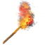
TorciaPorta luce e calore, respinge l'oscurità.
Come ottenerlo
- Fabbricare: senza banco da lavoro da 1 × Legna, 1 × Resina
- Forzieri: Nave di pietre (tomba) · 53 % di probabilità, Villaggio del Nord · 53 % di probabilità, Capanna (Nord) · 52 % di probabilità, Campo dei taglialegna · 52 % di probabilità, Rovina di combattimento · 50 % di probabilità, Casa di legno abbandonata · 28–36 % di probabilità, Fattoria abbandonata · 36 % di probabilità, Villaggio dei draugr · 36 % di probabilità
 Tormento degli Jotunn
Tormento degli Jotunn
Nemmeno i giganti di un tempo riuscivano a resistere alla lama velenosa di quest' arma.
Come ottenerlo
- Fabbricare: Forgia nera da 5 × Legno di Yggdrasil, 15 × Ferro, 3 × Sacco di bile, 10 × Eitr raffinato · per miglioramento: 10 × Ferro, 1 × Sacco di bile, 1 × Eitr raffinato
 Vassoio da portata
Vassoio da portata
Imbandisci la tavola con qualsiasi pietanza e bevanda che preferisci. Farai colpo sui tuoi ospiti con un ottimo banchetto.
Come ottenerlo
- Comprare: La strega della palude · 140 monete
 Vendetta del nord
Vendetta del nord
Un fiocco di neve imprigionato, motivi infiniti che emergono dal suo interno...
Come ottenerlo
- Fabbricare: Tavolo galdr (livello 3) da 10 × Ghiaccio, 5 × Fil di Norna, 1 ×
 Trofeo di Hexen · per miglioramento: 5 × Ghiaccio, 2 × Fil di Norna
Trofeo di Hexen · per miglioramento: 5 × Ghiaccio, 2 × Fil di Norna - Cuocere: Fonderia del gelo da
 Colata: Vendetta del nord
Colata: Vendetta del nord
 Zampe dell'orso
Zampe dell'orso
Fatte per strappare e lacerare.
Come ottenerlo
- Fabbricare: Banco di lavoro (livello 2) da 2 × Pelle di orso, 2 ×
 Zampa di orso, 4 × Ritagli di cuoio · per miglioramento: 2 × Pelle di orso, 2 × Ritagli di cuoio
Zampa di orso, 4 × Ritagli di cuoio · per miglioramento: 2 × Pelle di orso, 2 × Ritagli di cuoio
 Zanna del Non morto
Zanna del Non morto
Legno scuro teso con una corda scintillante, un oggetto brutale.
Come ottenerlo
- Fabbricare: Forgia (livello 2) da 10 × Corteccia antica, 20 × Argento, 2 × Pelle di cervo, 10 ×
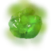
Fanghiglia · per miglioramento: 5 ×Corteccia antica, 10 × Argento, 2 × Pelle di cervo, 2 × Fanghiglia
 Zanna di cenere
Zanna di cenere
Risorto dalle ceneri, questo arco racchiude una forza indomabile.
Come ottenerlo
- Fabbricare: Forgia nera (livello 3) da 10 × Cenerlegno, 16 × Osso carbonizzato, 5 × Fiammetal, 5 × Dente di faucosso · per miglioramento: 5 × Cenerlegno, 10 × Osso carbonizzato, 5 × Fiammetal, 5 × Dente di faucosso
Utilizzo
- Ingrediente per: Zanna di radice, Zanna di sangue, Zanna di tempesta
 Zanna di radice
Zanna di radice
Così come le piante rampicanti tentano di avvicinarsi al sole, così questo arco anela il massacro.
Come ottenerlo
- Fabbricare: Forgia nera (livello 4) da 1 × Zanna di cenere, 5 × Fiammetal, 1 × Giada · per miglioramento: 5 × Fiammetal, 1 × Giada
 Zanna di sangue
Zanna di sangue
Le frecce scoccate da questo arco lacerano la carne con ferocia senza pari.
Come ottenerlo
- Fabbricare: Forgia nera (livello 4) da 1 × Zanna di cenere, 5 × Fiammetal, 1 × Pietra del sangue · per miglioramento: 5 × Fiammetal, 1 × Pietra del sangue
 Zanna di tempesta
Zanna di tempesta
Lascia che le tue frecce volino rapide come fulmini.
Come ottenerlo
- Fabbricare: Forgia nera (livello 4) da 1 × Zanna di cenere, 5 × Fiammetal, 1 × Iolite · per miglioramento: 5 × Fiammetal, 1 × Iolite
 Zappa
Zappa
Un attrezzo da contandino per lavorare la terra